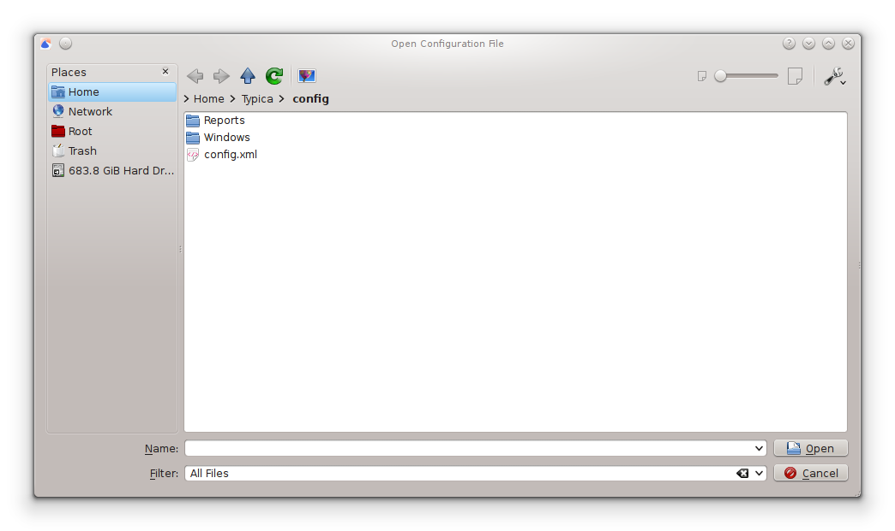

Open Configuration File
After Typica has connected to a database or you have decided to not connect to the database, you will be prompted to select a configuration file unless you have opened Typica through a shortcut or command line that specifies the configuration file you would like to use. The configuration file is responsible for setting up nearly all of the graphical interface elements in Typica. An example configuration, config.xml is provided with Typica in the config folder. The rest of the documentation assumes that you are using this configuration and an effort is made to provide an example configuration that most people will not need to customize, however if you would like to change the behavior of Typica, it is often possible to achieve the desired results by editing the files in the config folder and its subfolders.
The prompt comes in the form of an Open File window and should look similar to what you see when you select Open from the File menu in most other programs on your computer. When using the example configuration provided with Typica, please ensure that you are using the configuration provided with the version of Typica that you are using and not an older configuration provided with a previous version of the program that you may have used. Also note the the title of the "Open Configuration File" window. If the title of the window is not "Open Configuration File" you might not actually be using Typica, in which case opening the file will result in unexpected behavior as the computer will do as you have instructed instead of as you intended.
What Happens Next?
After the configuration file has been opened you should see the "Choose Your Path" window. This is the main navigational window for the program which provides access to the major functional areas of the program.